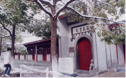
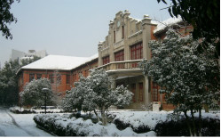
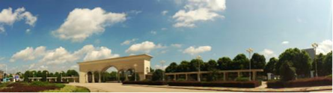
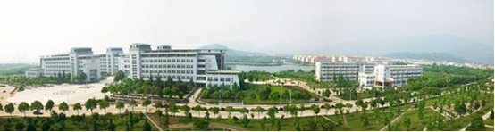
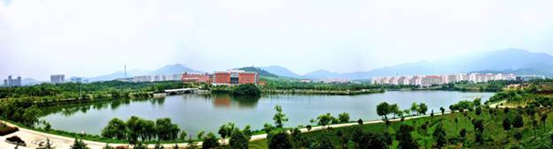

安庆师范大学坐落在国家历史文化名城、国家园林城市、中国优秀旅游城市——安庆。这里是桐城派的故里、黄梅戏的故乡，有着“千年古城、文化之邦、百年省会、戏剧之乡”的美誉。学校傍依浩瀚长江，毗邻宁安高铁、合安九高铁，地理位置优越，水、陆、空交通便利，是皖西南地区唯一的省属师范大学。
 
学校办学历史悠久，是安徽近代高等教育的发源地。1897年，清代著名省学敬敷书院在此办学，揭开了百年育人的序幕。1901年，敬敷书院与求是学堂合并成立安徽大学堂，后更名为安徽高等学堂。1928年省立安徽大学在此创办，1946年改为国立安徽大学。菱湖校区现存的敬敷书院和国立安徽大学红楼，作为全国重点文物保护单位见证了学校百年发展历程。1980年，经国务院批准成立安庆师范学院。2006年，学校获批硕士学位授予权。2007年获得教育部本科教学工作水平评估“优秀”等次。2016年，经教育部批准更名为安庆师范大学。2017年，安庆师范大学进入安徽省一本招生行列。
学校办学条件优越，现有龙山、菱湖两个校区，占地面积 2845 亩。设有17个二级学院，80个本科专业，涵盖文学、经济学、历史学、法学、教育学、理学、工学、管理学、农学、艺术学等10大学科门类，以人文学科、社会学科、理学、工学为主要学科门类。现有教职工1200余人，其中副高以上专业技术职称500余人，博士、硕士学位的教师占专任教师总数的90%以上。拥有国家级教学名师、省级教学名师、享受国务院和省政府特贴专家、省学术技术带头人及后备人选等各类优秀人才110余人。全日制在校生18000余人。

学校教学水平优秀，不断深化教育教学改革，大力推进教学质量工程建设。近年来，获得国家级特色专业、国家级教学团队、国家级人才培养模式创新试验区、国家大学生文化素质教育基地、国家级大学生校外实践教育基地、国家级精品课程、国家大学生素质教育精品通识课程、国家精品视频公开课等国家级质量工程建设项目14项，承担省级重点教研项目、省级教研项目160余项，获得省级教学成果特等奖、一等奖30余项。
学校学科实力较强，拥有5个省级重点学科，11个一级学科学术硕士学位点（马克思主义理论、中国语言文学、数学、化学、统计学、教育学、中国史、生态学、信息与通信工程、环境科学与工程、软件工程），7个专业硕士学位授权类别（教育、化学工程、法律、体育、翻译、新闻与传播、艺术）。建有中央与地方共建高校特色实验室、共建国家认可实验室、省重点实验室、省人文社科重点研究基地、省协同创新中心、省工程技术研究中心等17个省部级平台。近五年来，主持国家自然科学基金、国家社会科学基金以及省部级项目300余项，获得省部级以上科研奖励25项。
学校开放办学活跃，与美国索尔兹伯里大学、德国希尔德斯海姆大学、韩国韩瑞大学等16所国外高校结成友好合作学校，开展联合培养商务英语专业“3+1”和国际经济与贸易专业“2+2”双学位项目，在教师交流、学生互派、教学科研等方面开展实质性合作。学校还与国内一批著名高校、科研院所、大型国有企业开展合作研究。
学校办学特色鲜明，在长期办学实践中形成了“文化育人、服务立校”的办学特色。以社会主义核心价值观为引领，围绕优秀地方文化传承创新，依托丰厚的地方文化资源和独特的区位优势，在桐城派与桐城文化、黄梅戏传承创新、教师教育、石油化工新材料等地方主导产业、皖西南生物多样性研究与保护等方面取得突出成绩。

学校育人成果丰硕，始终紧扣立德树人根本任务，大力弘扬“敬敷、世范、勤学、笃行”校训精神，深入实施修德、修智、修行“三修”教育工程，促进学生成长、成人、成才、成功。改革开放以来，累计为国家培养全日制高等专门人才10余万名，为国家经济社会发展作出了重要贡献。五年来，学生在“挑战杯”课外学术科技作品竞赛、全国师范生教学技能大赛、全国计算机仿真大赛、全国大学生数学建模大赛、全国大学生物流设计大赛等各类大型比赛中获得国家级奖励1100余项。本科毕业生就业率和考研录取率在全省本科院校中名列前茅。
学校事业全面发展，是全国学校艺术教育工作先进单位，连续十五年全国大中专学生青年志愿者暑期“三下乡”社会实践活动先进单位，连续六届安徽省文明单位，连续七年安徽省普通高校毕业生就业工作先进集体，连续四年安徽省就业工作标兵单位，先后多次被授予安徽省党建和思想政治工作先进高校等称号。

新时代新起点新征程，学校将牢牢把握社会主义办学方向，全面贯彻党的十九大精神和安徽省第十次党代会精神，落实学校第一次党代会决策部署，紧扣立德树人根本任务，抢抓“双一流”建设机遇，强化服务地方使命担当，努力建设特色鲜明的地方应用型高水平大学。（统计数据截至2018年3月）